Calibre Bench help
Back to the appBack, Front, Face
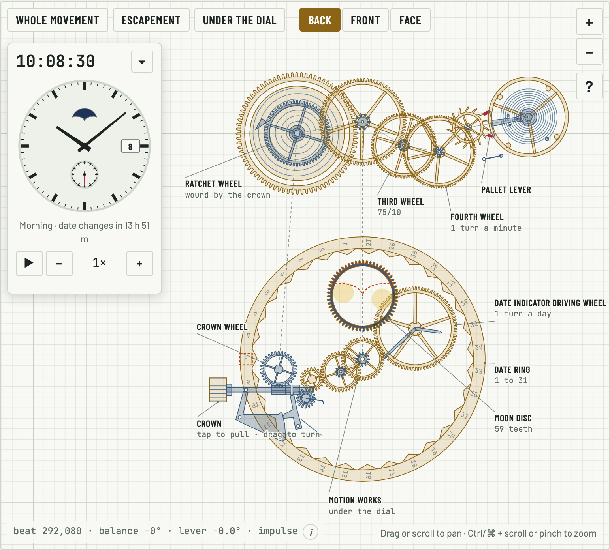
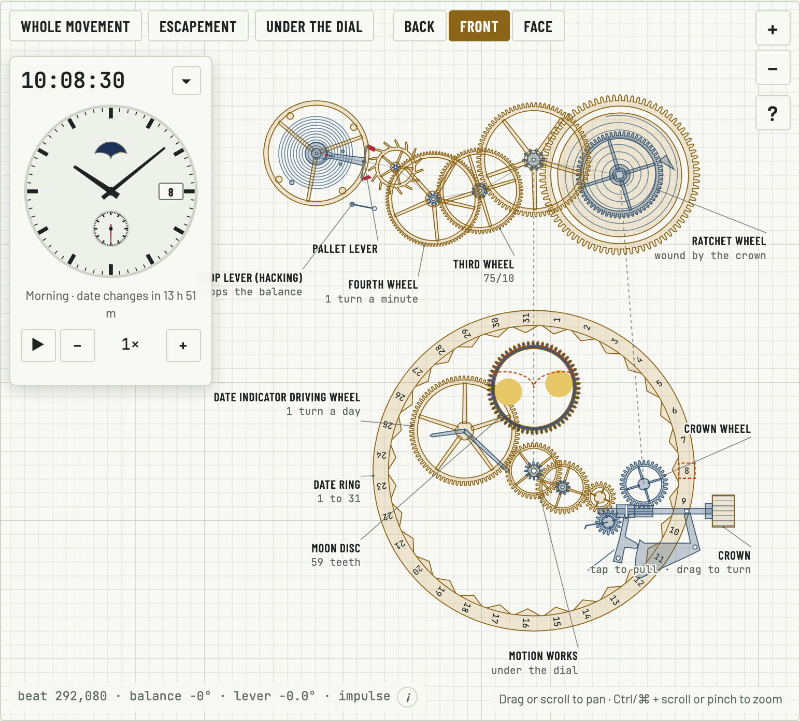
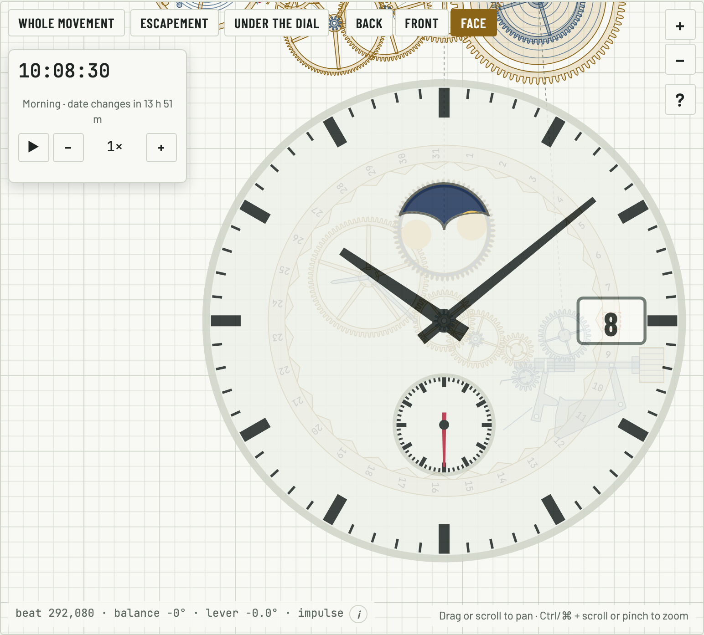
- From the back, printing is mirrored and faded
- From the front, printing reads normally
- Face lays the dial over the movement and taps go through
Moon phase
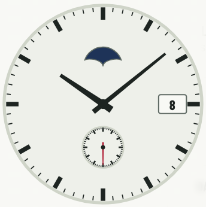
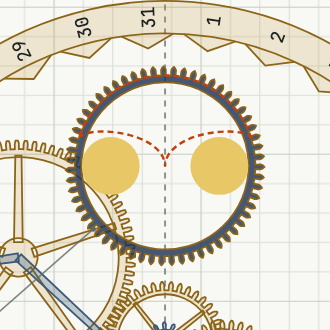
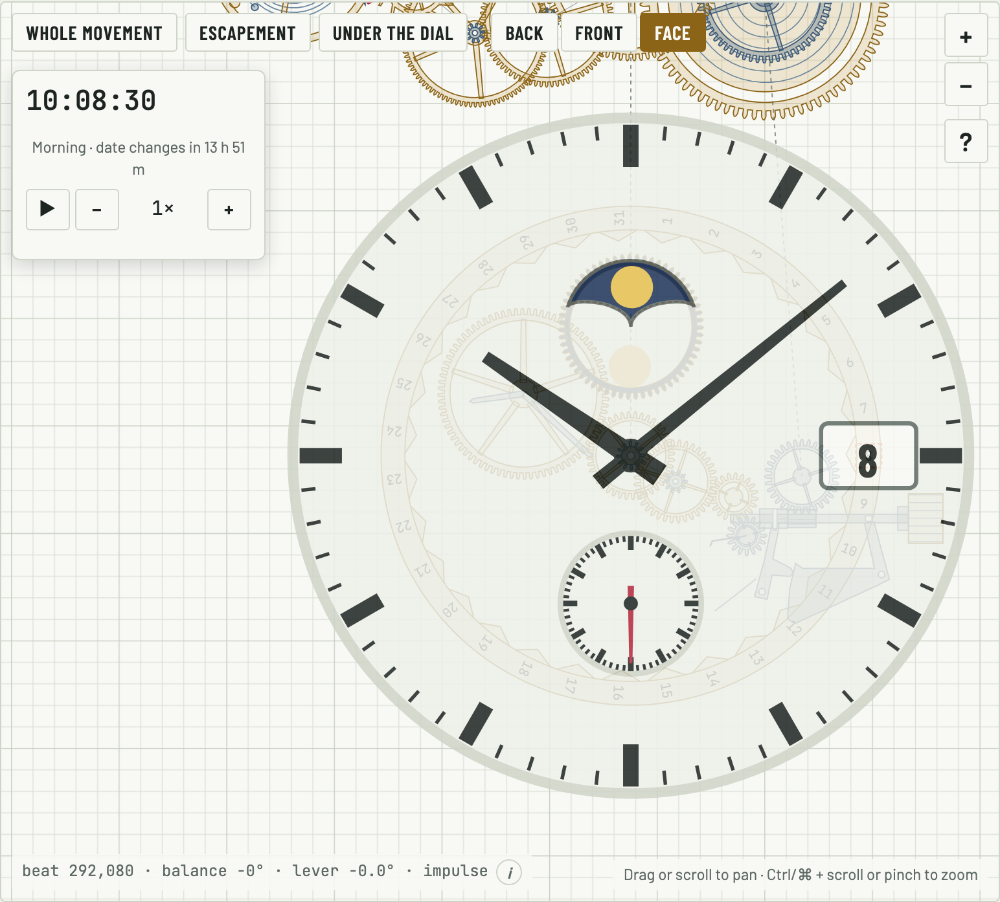
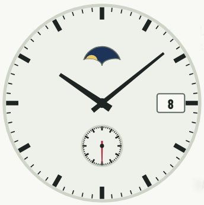
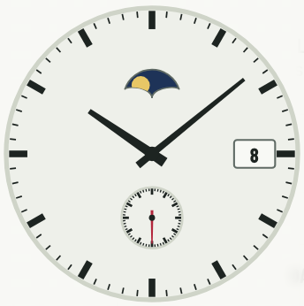
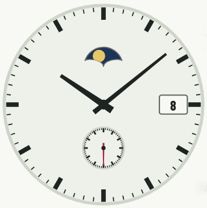
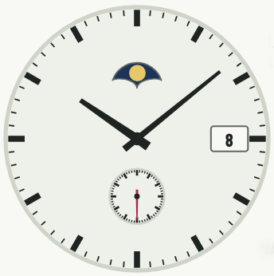
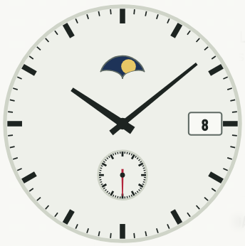
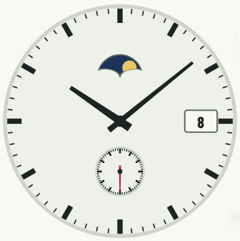
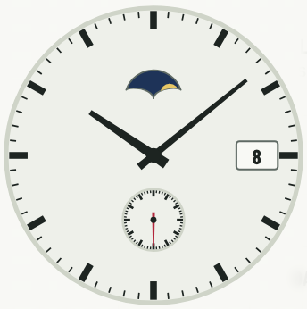
- New moon is hidden
- Full moon shows whole
- Moon appears and disappears on its right side first
- Moon wheel sits behind the aperture
Date
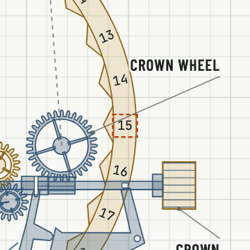
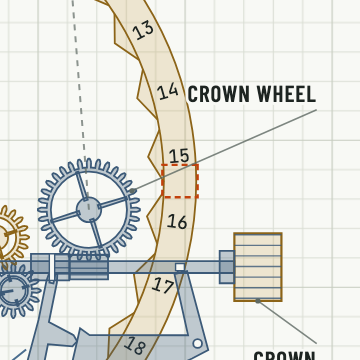
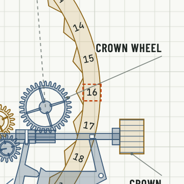
- Next date comes up from below
- Date ring shows through the date window
Power and crown
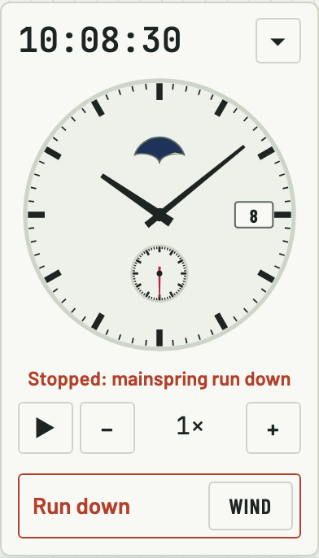
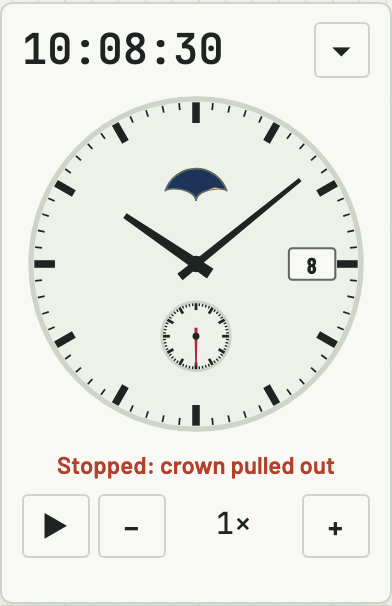
- Running down shows a Wind button
- Pulling the crown out stops the watch